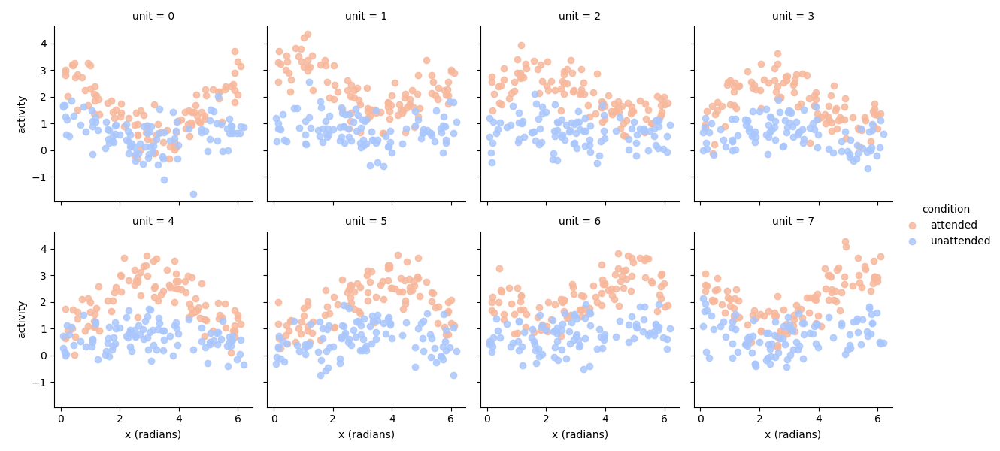
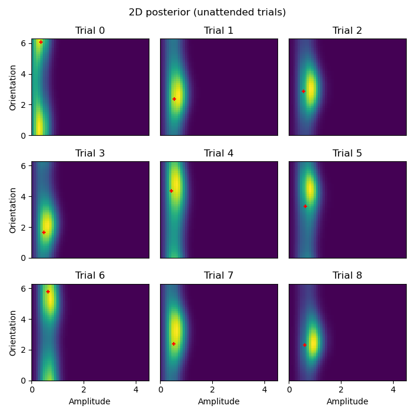
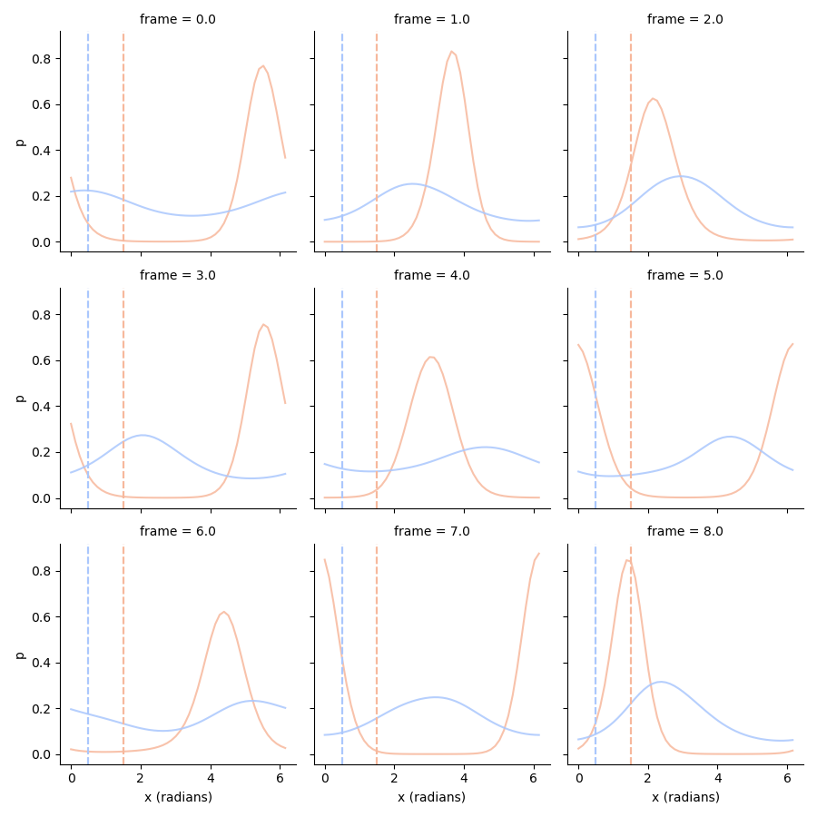
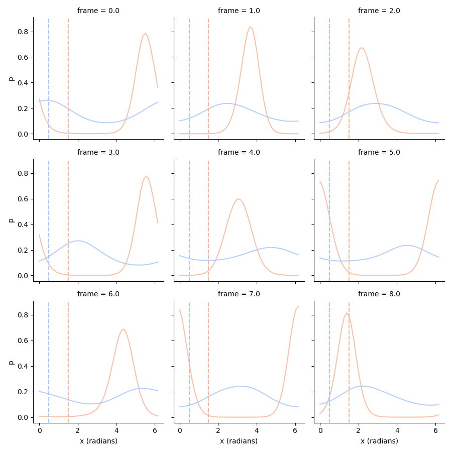
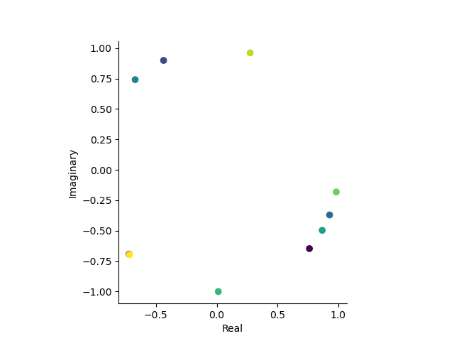
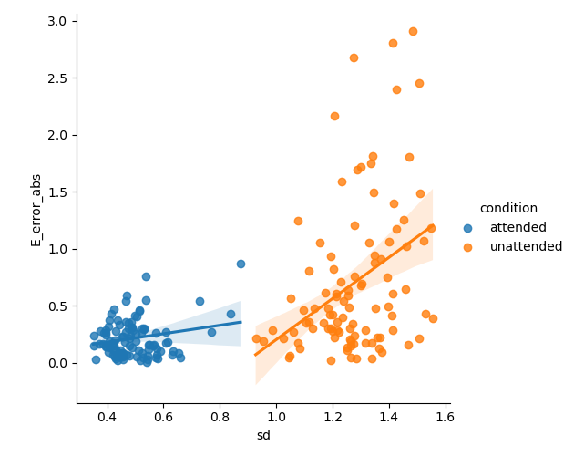

Lesson 6: Decoding two-dimensional stimulus spaces#
In this lesson, we will decode a two-dimensional stimulus space. Specifically, we are going to assume that the stimulus drive (amplitude) of specific stimuli can be modulated, for example by the attentional state of the subject (see, e.g., Serences and Yantis[1], Sprague and Serences[2], and Sawetsuttipan et al.[3]).
Hence, every stimulus is now characterized by two parameters:
its orientation (x (radians)) and its amplitude (amplitude).
Let’s set up a virtual mapping experiment, where we are simulating data, estimate parameters, and decode the stimulus space.
Crucially, in the mapping experiment, we are (‘rightfully’) going
to assume that the stimulus drive (amplitude) is not modulated
and is always 1.0.
We use the argument model_stimulus_amplitude of the VonMisesPRF-model
to indicate we want to model both orientation and amplitudes.
# Set up a neural model
from braincoder.models import VonMisesPRF
import numpy as np
import pandas as pd
import scipy.stats as ss
noise = 0.5
# We are setting up a VonMisesPRF model with 8 orientations,
# We have 8 voxels, each with a linear combination of the 8 von Mises functions
# We use the identity matrix with some noice, so that each voxel is driven by
# largely by a single PRF
parameters = pd.DataFrame({'mu':np.linspace(0, 2*np.pi, 8, False), 'kappa':1.0, 'amplitude':1.0, 'baseline':0.0})
weights = np.identity(8) * 5.0
weights += np.random.rand(8, 8)
model = VonMisesPRF(parameters=parameters, model_stimulus_amplitude=True, weights=weights)
# Note how the stimulus type is now `OneDimensionalRadialStimulusWithAmplitude`
# which means that the stimulus is two-dimensional
print(model.stimulus)
print(model.stimulus.dimension_labels)
<braincoder.stimuli.OneDimensionalRadialStimulusWithAmplitude object at 0x2d2b6dd20>
['x (radians)', 'amplitude']
Now we simulate data, estimate parameters, and the noise model:
mapper_paradigm = pd.DataFrame({'x (radians)':np.random.rand(100)*2*np.pi, 'amplitude':1.})
data = model.simulate(paradigm=mapper_paradigm, noise=noise)
# Set up parameter fitter
from braincoder.optimize import WeightFitter, ResidualFitter
fitter = WeightFitter(model, parameters, data, mapper_paradigm)
# With 8 overlapping Von Mises functions, we already need some regularisation, hence alpha=1.0
fitted_weights = fitter.fit(alpha=1.0)
# Now we fit the covariance matrix on the residuals
resid_fitter = ResidualFitter(model, data, mapper_paradigm, parameters, fitted_weights)
omega, dof = resid_fitter.fit(progressbar=False)
After fitting the mapping paradigm, we are now going to simulate an experiment with two conditions, where the stimulus drive is modulated in the attended condition, the stimulus drive is modulated by a factor of ``1.5``, whereas in the unattended condition, the stimulus drive is modulated by a factor of ``0.5``.
# Now we set up an experimental paradigm with two conditions
# An `attended` and an `unattended` condition.
# In the attended condition, the stimulus will have more drive (1.5),
# in the unattended condition, the stimulus will have less drive (0.5).
n = 200
experimental_paradigm = pd.DataFrame(index=pd.MultiIndex.from_product([np.arange(n/2.), ['attended', 'unattended']], names=['frame', 'condition']))
# Random orientations
experimental_paradigm['x (radians)'] = np.random.rand(n)*2*np.pi
# Amplitudes have some noise
experimental_paradigm['amplitude'] = np.where(experimental_paradigm.index.get_level_values('condition') == 'attended', ss.norm(1.5, 0.1).rvs(n), ss.norm(.5, 0.1).rvs(n))
experimental_data = model.simulate(paradigm=experimental_paradigm, noise=noise)
If we plot the simulated responses as a function of the ground truth orientation, we can clearly see both the preferred orientation and the modulation of the stimulus drive in the attended condition:
# Plot the data
import seaborn as sns
import matplotlib.pyplot as plt
tmp = experimental_data.set_index(experimental_paradigm['x (radians)'], append=True).stack().to_frame('activity')
g = sns.FacetGrid(tmp.reset_index(), col='unit', col_wrap=4, hue='condition', palette='coolwarm_r')
g.map(plt.scatter, 'x (radians)', 'activity', alpha=0.85)
g.add_legend()

Now we have the data and the noise model we can, for each data point, calculate its likelihood given different plausible stimuli. Note that this set of plausible stimuli consistutes a (flat) prior, so after normalizing likelihoods, we can interpret the likelihood as a posterior distribution. Also, remember that we use the PRF and noise parameters that we estimated in the mapping experiment!
Note how we use the pandas library to flexibly manipulate the multidimensional likelihood;
# Now we can calculate the 2D likelihood/posterior of different orientations+amplitudes for the data
lower_amplitude, higher_amplitude = 0.0, 4.5
potential_amplitudes = np.linspace(lower_amplitude, higher_amplitude, 50)
potential_orientations = np.linspace(0, 2*np.pi, 50, False)
# Make sure ground truth is the potential stimuli
potential_amplitudes = np.sort(np.append(potential_amplitudes, [0.5, 1.5]))
# We use the `pd.MultiIndex.from_product` function to create a grid of possible stimuli
potential_stimuli = pd.MultiIndex.from_product([potential_orientations, potential_amplitudes], names=['x (radians)', 'amplitude']).to_frame(index=False)
# Now we get, for each data point, the likelihood of each possible stimulus
ll = model.get_stimulus_pdf(experimental_data, potential_stimuli)
Here we plot the posterior distribution for the first 9 data points of the attended and unattended conditions:
# Plot 2D posteriors for first 9 trials
# Once we have these 2D likelihoods, now we want to be able to plot them.
def plot_trial(key, ll=ll, paradigm=experimental_paradigm, xlabel=False, ylabel=False):
# We use the `stack` method to turn the `amplitude` dimension into a column
ll = ll.loc[key].unstack('amplitude')
# Use imshow to show a 2D image of the likelihood
vmin, vmax = ll.min().min(), ll.max().max()
plt.imshow(ll, origin='lower', aspect='auto', extent=[lower_amplitude, higher_amplitude, 0, 2*np.pi], vmin=vmin, vmax=vmax)
# Plot the _actual_ ground truth amplitude and orientation
plt.scatter(paradigm.loc[key]['amplitude'], paradigm.loc[key]['x (radians)'], c='r', s=25, marker='+')
# Some housekeeping for the subplots
plt.title(f'Trial {key[0]}')
if xlabel:
plt.xticks()
plt.xlabel('Amplitude')
else:
plt.xticks([])
if ylabel:
plt.yticks()
plt.ylabel('Orientation')
else:
plt.yticks([])
def plot_condition(condition):
"""
Plot the 2D posterior for a given condition for the first 9 trials.
Parameters:
condition (str): The condition for which to plot the posterior.
Returns:
None
"""
plt.figure(figsize=(7, 7))
for ix in range(9):
plt.subplot(3, 3, ix+1)
xlabel = ix in [6, 7, 8]
ylabel = ix in [0, 3, 6]
plot_trial((ix, condition), xlabel=xlabel, ylabel=ylabel)
plt.suptitle(f'2D posterior ({condition} trials)')
plt.tight_layout()
plot_condition('attended')
plot_condition('unattended')


- These 2D posterior distributions are very insightful! Notice, for example:
The orientation of the attended stimulus is more precisely defined in the posterior than the unattended stimulus.
The amplitude of the attended stimulus is more precisely defined in the posterior than the unattended stimulus.
The MAP estimate/mean posterior (red
+) are closer to the ground truth for the attended stimulus than the unattended stimulus.
Decode the marginal probability distribution#
When we now want to decode the marginal probability distribution of orientation
we need to take into the account of the uncertainty of both dimensions. Hence,
we take the expectation, integrating the other dimension away:
# Now we can calculate the 1D posterior for specific orientations _or_ amplitudes
# Marginalize out orientations
amplitudes_posterior = ll.groupby('amplitude', axis=1).sum()
amplitudes_posterior = amplitudes_posterior.div(np.trapz(amplitudes_posterior, amplitudes_posterior.columns, axis=1), axis=0) # This is the same as normalizing the posterior
# Marginalize out amplitudes
orientations_posterior = ll.groupby('x (radians)', axis=1).sum()
orientations_posterior = orientations_posterior.div(np.trapz(orientations_posterior, orientations_posterior.columns, axis=1), axis=0)
# Plot orientation posteriors
tmp = orientations_posterior.stack().loc[:8].to_frame('p')
g = sns.FacetGrid(tmp.reset_index(), col='frame', col_wrap=3, hue='condition', palette='coolwarm_r')
g.map(plt.plot, 'x (radians)', 'p', alpha=0.85)
g.map(plt.axvline, x=1.5, c=sns.color_palette('coolwarm_r', 2)[0], ls='--')
g.map(plt.axvline, x=0.5, c=sns.color_palette('coolwarm_r', 2)[1], ls='--')

Decode the conditional probability distribution#
We see that especially the orientation posterior of the unattended condition is very broad. Part of the problem is that we have to take into account the uncertainty surrounding the generating amplitude. We can make the posterior more precise by using a ground truth amplitude, which we can use to condition the posterior on:
(With \(a\) being the ground truth amplitude).
# Use the ground truth amplitude to improve the orientation posterior
# so p(orientation|true_amplitude)
conditional_orientation_ll = pd.concat((ll.stack().xs('attended', 0, 'condition').xs(1.5, 0, 'amplitude'),
ll.stack().xs('unattended', 0, 'condition').xs(0.5, 0, 'amplitude')),
axis=0,
keys=['attended', 'unattended'],
names=['condition']).swaplevel(0, 1).sort_index()
# Normalize!
conditional_orientation_ll = conditional_orientation_ll.div(np.trapz(conditional_orientation_ll, conditional_orientation_ll.columns, axis=1), axis=0)
tmp = conditional_orientation_ll.stack().loc[:8].to_frame('p')
g = sns.FacetGrid(tmp.reset_index(), col='frame', col_wrap=3, hue='condition', palette='coolwarm_r')
g.map(plt.plot, 'x (radians)', 'p', alpha=0.85)
g.map(plt.axvline, x=1.5, c=sns.color_palette('coolwarm_r', 2)[0], ls='--')
g.map(plt.axvline, x=0.5, c=sns.color_palette('coolwarm_r', 2)[1], ls='--')

Note how especially for the unattended condition, the orientation posterior is now much more precise.
The complex plane#
If we want to have calculate the mean posterior for orientation and amplitude,
we can use numerical integration. Notice, however, that orientation is in polar space,
which means we can not just integrate over raw angles (e.g., what is the mean angle of [0.1*pi, 1.9*pi]?).
The problem is solved by using integration over complex`r numbers.
Briefly, complex numbers represent a point in the complex plane, where the real part is the ``x-coordinate
and the imaginary part is the y-coordinate.
This is what the complex plane looks like for the first 10 data points of the attended condition:
# Let's plot the firs 10 trials in the complex plane
first_10_trials = experimental_paradigm.xs('attended', 0, 'condition')['x (radians)'].iloc[:10]
orientations_complex = to_complex(first_10_trials.values)
plt.figure()
plt.scatter(orientations_complex.real, orientations_complex.imag, c=first_10_trials.index)
plt.gca().set_aspect('equal')
plt.xlabel('Real')
plt.ylabel('Imaginary')
sns.despine()

If we now want to take integrals/expectations/averages over angles, we can simply take the average over the complex numbers that represent the angles. which is equivalent to taking the average over the unit circle in the complex plane.
# Get posterior means by integrating over complex numbers
def wrap_angle(x):
return np.mod(x + np.pi, 2*np.pi) - np.pi
def get_posterior_stats(posterior, ground_truth=None):
posterior = posterior.copy()
complex_grid = np.asarray(to_complex(posterior.columns))
# Take integral over the posterior to get to the expectation (mean posterior)
# In this case a complex number that we convert back to an angle between 0 and 2pi
E = from_complex(np.trapz(posterior*complex_grid[np.newaxis,:], axis=1))
# Take the integral over the posterior to get the expectation of the distance to the
# mean posterior (i.e., standard deviation)
relative_error = E[:, np.newaxis] - posterior.columns.values[np.newaxis,:]
# Wrap the angle to be between 0 and pi, the error can never be larger than pi (180 degrees)
relative_error = wrap_angle(relative_error)
absolute_error = np.abs(relative_error)
sd = np.trapz(absolute_error * posterior, posterior.columns, axis=1)
stats = pd.DataFrame({'E':E, 'sd':sd}, index=posterior.index)
if ground_truth is not None:
stats['E_error'] = wrap_angle(stats['E'] - ground_truth)
stats['E_error_abs'] = np.abs(stats['E_error'])
stats['ground_truth'] = ground_truth
return stats
posterior_stats = get_posterior_stats(conditional_orientation_ll, ground_truth=experimental_paradigm['x (radians)'].values)
# Circular correlations:
import pingouin as pg
posterior_stats.groupby('condition').apply(lambda d: pd.Series(pg.circ_corrcc(d['E'], d['ground_truth'], True), index=['rho', 'p']))
Note how the correlation between the ground truth and posterior mean is much higher for the attended condition than the unattended condition.
Also note that you should never use normal (e.g., Pearson’s) correlation on angles!
We can now also plot the mean posteriors in the complex plane:
# Let's see how far the posterior mean is from the ground truth
# by plotting the estimates and groun truth in the complex plane
palette = sns.color_palette('coolwarm_r', 2)
# Create custom legend
legend_elements = [
plt.Line2D([0], [0], marker='x', color='k', label='Estimate', markersize=8, linewidth=0),
plt.Line2D([0], [0], marker='o', color='k', label='Truth', markersize=8, linewidth=0),
plt.Line2D([0], [0], marker='s', color=palette[0], label='Attended', markersize=8, linewidth=0),
plt.Line2D([0], [0], marker='s', color=palette[1], label='Unattended', markersize=8, linewidth=0)
]
# Plot the data
for ix, row in posterior_stats.iloc[:10].iterrows():
hue = sns.color_palette('coolwarm_r', 2)[['attended', 'unattended'].index(ix[1])]
estimate_complex = to_complex(row['E'])
ground_truth_complex = to_complex(row['ground_truth'])
plt.plot([estimate_complex.real, ground_truth_complex.real], [estimate_complex.imag, ground_truth_complex.imag], color=hue)
plt.scatter(estimate_complex.real, estimate_complex.imag, color=hue, s=50, marker='x')
plt.scatter(ground_truth_complex.real, ground_truth_complex.imag, color=hue, s=50, marker='o')
# Set aspect ratio and remove spines
plt.gca().set_aspect('equal')
sns.despine()
# Add legend
plt.legend(handles=legend_elements)
# Show the plot
plt.show()

Note how the unattended condition is, indeed, generally much further away from the ground truth than the attended condition.
Note, also that even within conditions we can predict the error of the classifier by using the variance of the posterior distribution:
# Plot the error as a function of the standard deviation of the posterior
sns.lmplot(x='sd', y='E_error_abs', data=posterior_stats.reset_index(), hue='condition')
